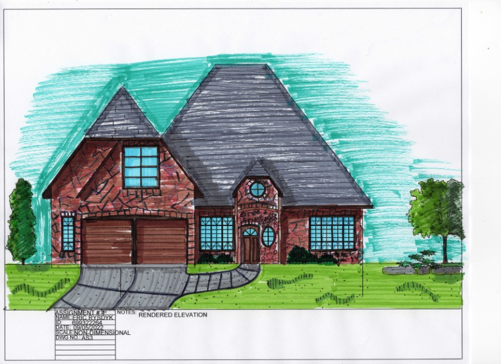
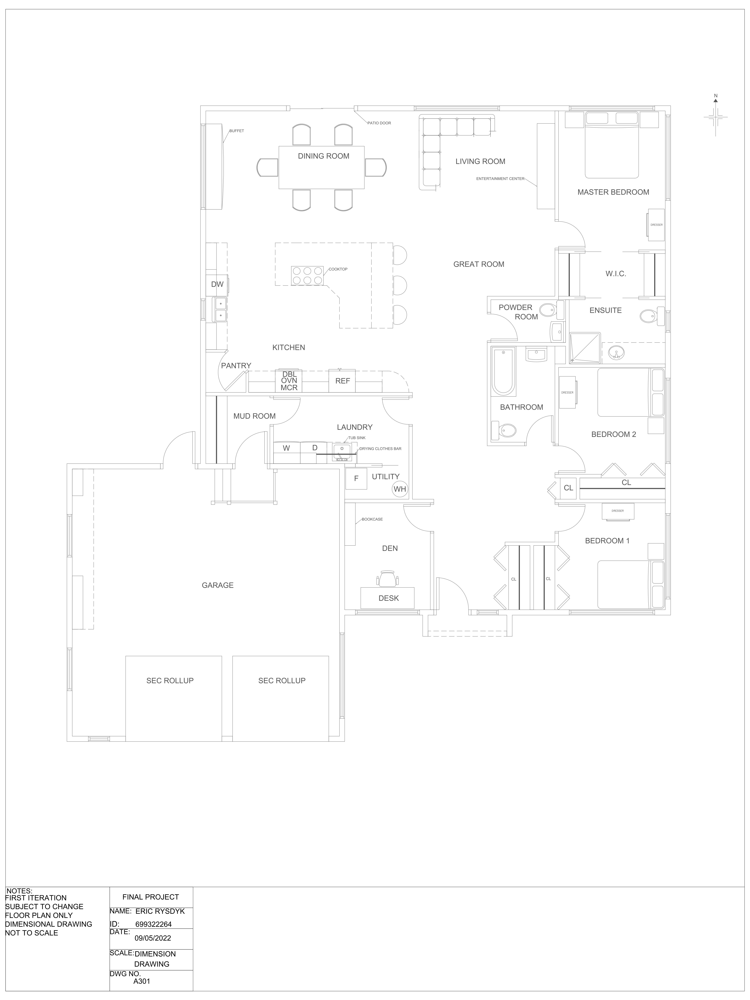
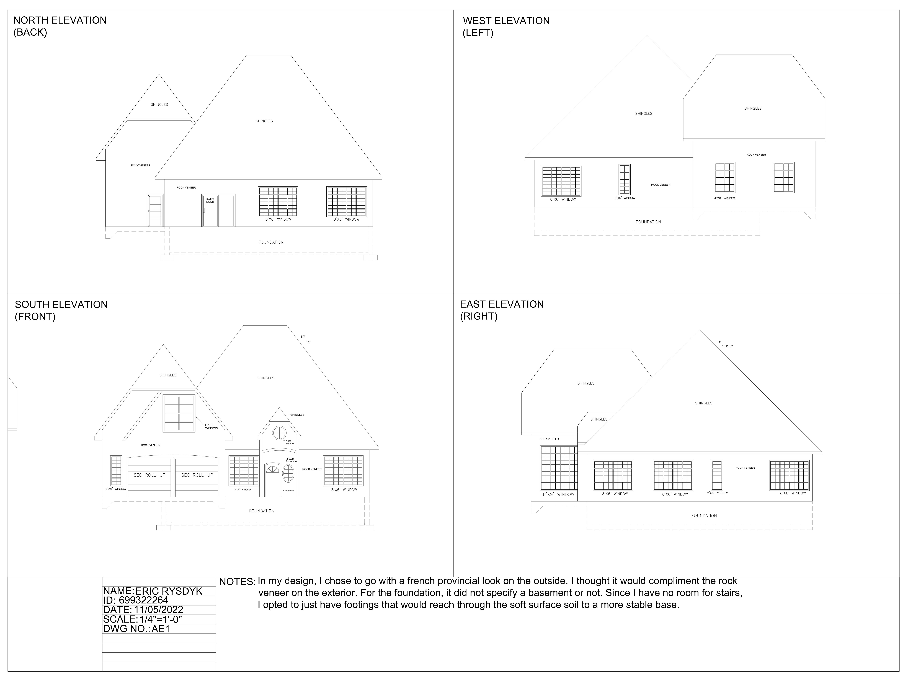
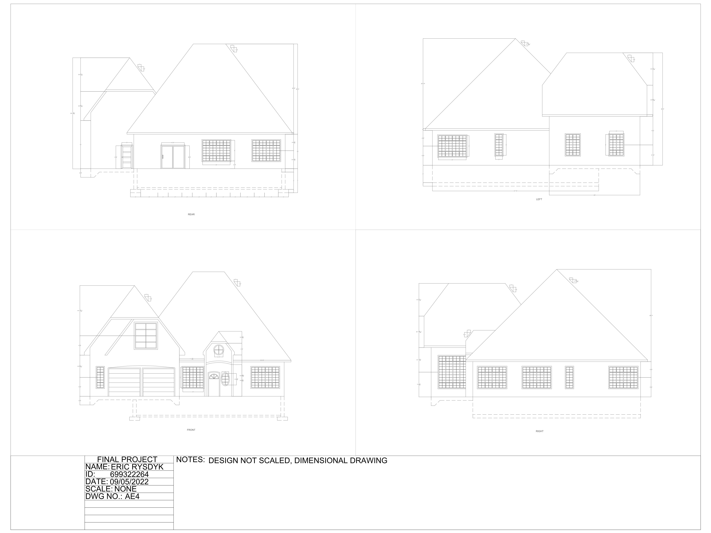
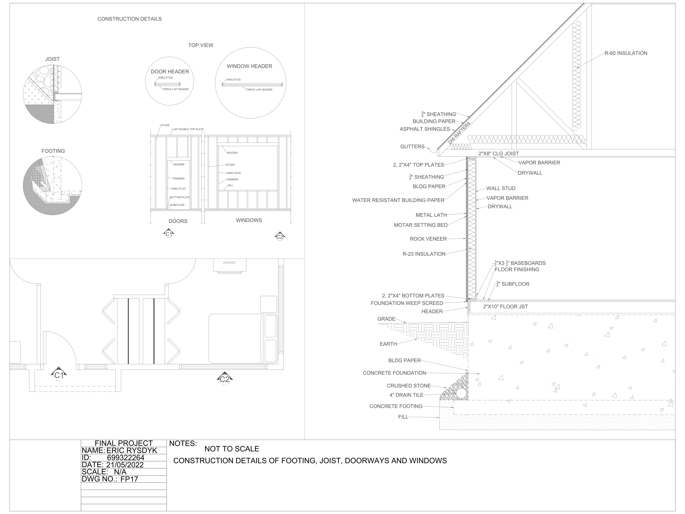
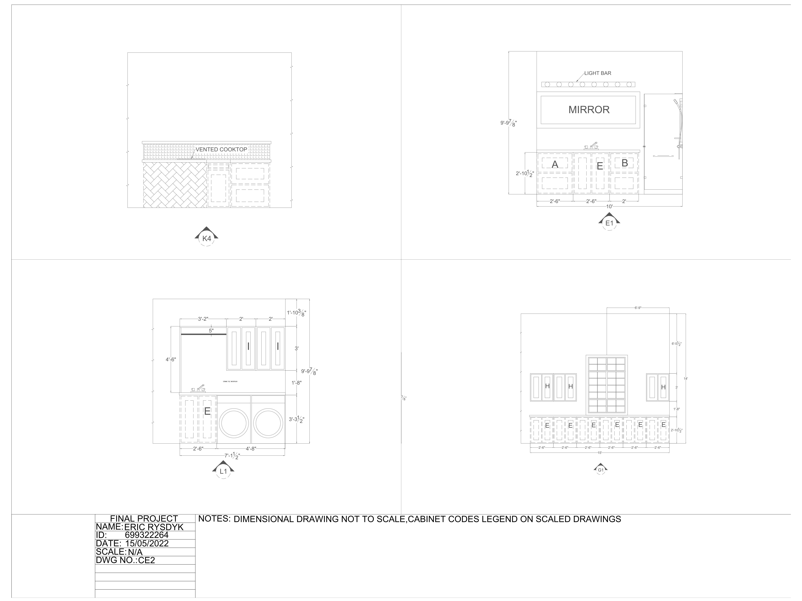
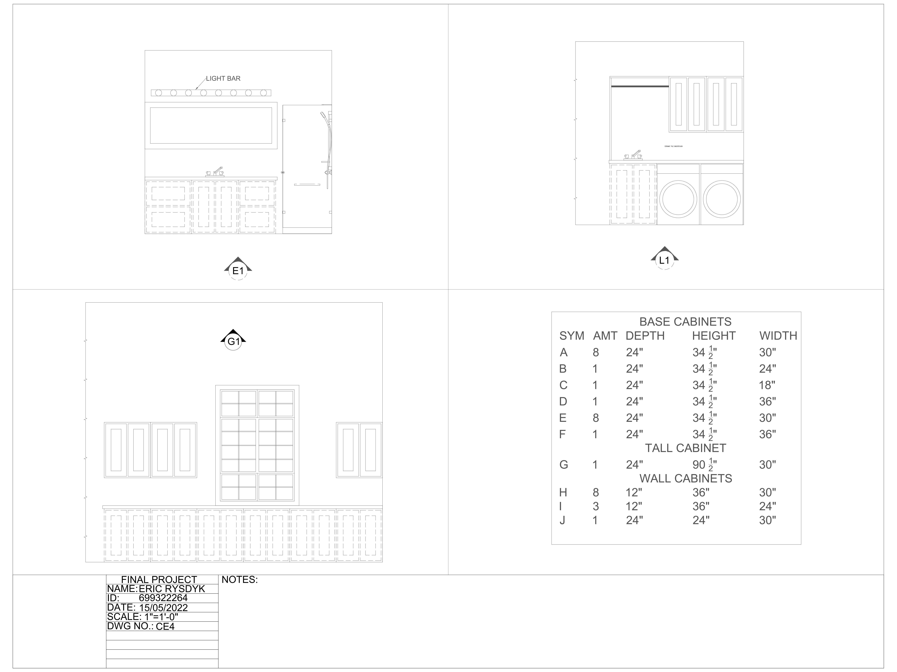
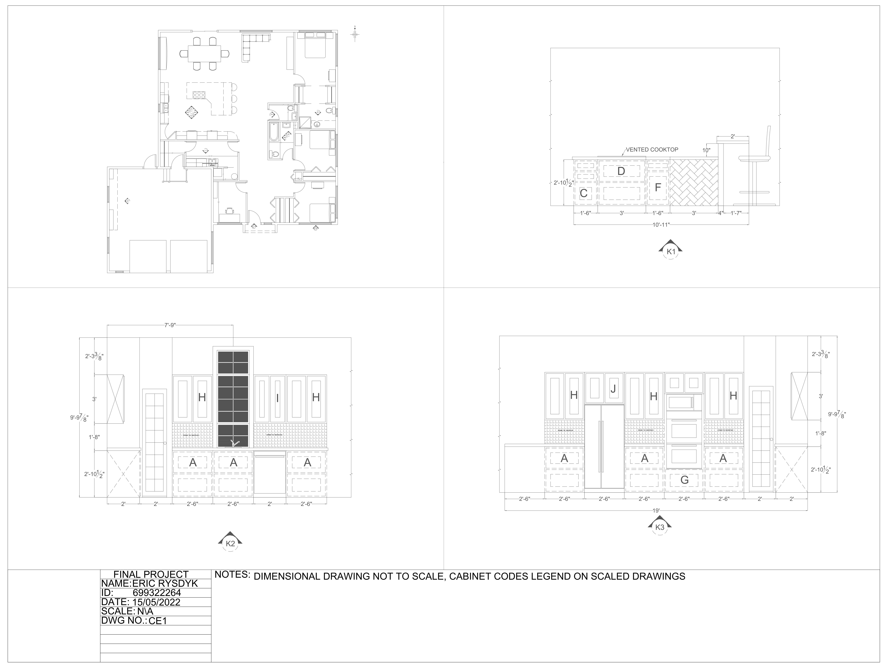

Project 4 — French Provincial Bungalow
A residential design project for a family of four, completed in AutoCAD as part of my Architectural Technology program at CDI College. Working from a client wishlist with defined lot setbacks and a no-basement condition, I interpreted the brief into a livable layout, testing circulation efficiency and kitchen work-triangle function throughout. The exterior was designed in a French Provincial style with rock veneer cladding.

Before any drawings, I wrote each room on a sticky note to physically rearrange the program. This let me test adjacencies and zoning without committing to a layout.

The bubble diagram established which spaces were public (living, dining, kitchen, garage) and which were private (bedrooms, bathrooms, den). Arrows indicate circulation between zones.

The block diagram translated the bubble concept into scaled rectangles, confirming the footprint would fit the lot with required setbacks.

Before any CAD work, I hand-rendered the site plan with color to test material choices and landscaping. This stage was not required by the brief but helped me work through the design by hand.

The French Provincial exterior took shape through this hand-rendered elevation. Steep roof pitches, gable accents, arched entry, and rock veneer cladding reinforce the traditional character.

The final floor plan reflects two guiding priorities: circulation efficiency and kitchen work-triangle function, positioning the sink, stove, and refrigerator to minimize steps.

Four elevations document the exterior in AutoCAD, using rock veneer, varied gable heights, and a mix of window types.

Dimensioned elevation set showing roof pitches, window sizes, and level heights across all four sides.

Details for footing, floor joist, and door/window headers. The brief specified no basement, so the foundation was designed as concrete footings reaching stable soil.

Interior elevations documenting kitchen, laundry, and bathroom millwork, including cabinet layouts and appliance coordination.

Cabinet schedule documenting base, tall, and wall cabinet dimensions, codes, and quantities alongside the corresponding elevations.

Kitchen elevation set showing the work-triangle layout established during the design process, with sink, cooktop, and refrigerator positioned for efficient meal preparation.